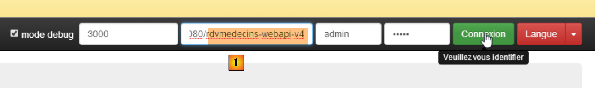
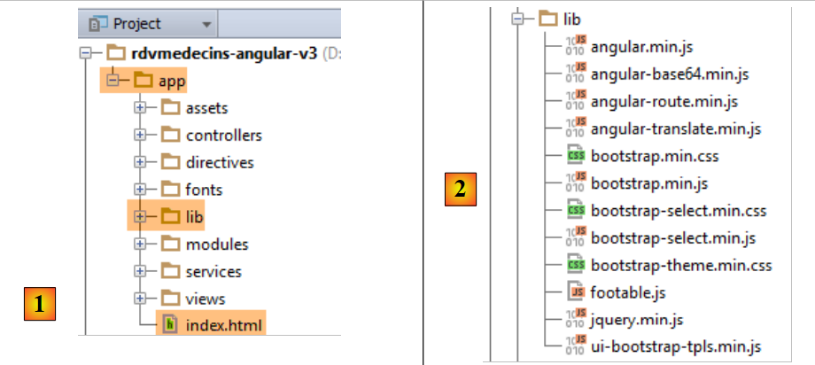
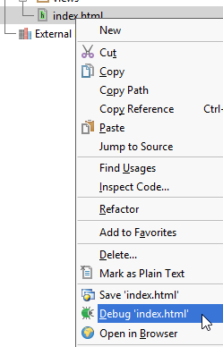
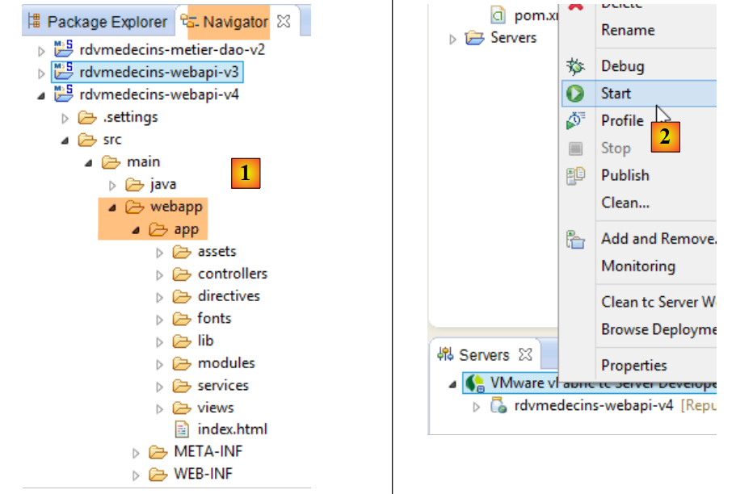
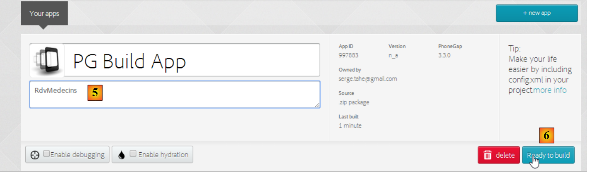

4. Operação do aplicativo
Agora, queremos operar a aplicação fora dos controladores IDE e STS (para o servidor) e do Webstorm (para o cliente).
4.1. Implantação do serviço web em um servidor Tomcat
Vimos no parágrafo 2.11.9 como criar um arquivo WAR para o Tomcat. Repetimos a operação aqui. Primeiramente, para preservar o que já existe, duplicamos o projeto Eclipse [rdvmedecins-webapi-v3] em [rdvmedecins-webapi-v4].
 |
O arquivo [pom.xml] é modificado da seguinte forma:
<modelVersion>4.0.0</modelVersion>
<groupId>istia.st.spring4.mvc</groupId>
<artifactId>rdvmedecins-webapi-v4</artifactId>
<version>0.0.1-SNAPSHOT</version>
<packaging>war</packaging>
<name>rdvmedecins-webapi-v3</name>
<description>Gestion de RV Médecins</description>
<parent>
<groupId>org.springframework.boot</groupId>
<artifactId>spring-boot-starter-parent</artifactId>
<version>1.0.0.RELEASE</version>
</parent>
<dependencies>
<dependency>
<groupId>org.springframework.boot</groupId>
<artifactId>spring-boot-starter-web</artifactId>
</dependency>
<dependency>
<groupId>org.springframework.boot</groupId>
<artifactId>spring-boot-starter-security</artifactId>
</dependency>
<dependency>
<groupId>org.springframework.boot</groupId>
<artifactId>spring-boot-starter-tomcat</artifactId>
<scope>provided</scope>
</dependency>
<dependency>
<groupId>istia.st.spring4.rdvmedecins</groupId>
<artifactId>rdvmedecins-metier-dao-v2</artifactId>
<version>0.0.1-SNAPSHOT</version>
</dependency>
</dependencies>
As alterações devem ser feitas em dois locais:
- linha 5: é necessário indicar que será gerado um arquivo WAR (Web ARchive);
- linhas 23-27: é necessário adicionar uma dependência do artefato [spring-boot-starter-tomcat]. Esse artefato inclui todas as classes do Tomcat nas dependências do projeto;
- linha 26: esse artefato é o [provided], ou seja, os arquivos correspondentes não serão incluídos no WAR gerado. Na verdade, esses arquivos estarão no servidor Tomcat no qual a aplicação será executada;
Além disso, é necessário configurar a aplicação web. Na ausência do arquivo [web.xml], isso é feito com uma classe que herda de [SpringBootServletInitializer]:
 |
A classe [ApplicationInitializer] é a seguinte:
package rdvmedecins.web.config;
import org.springframework.boot.builder.SpringApplicationBuilder;
import org.springframework.boot.context.web.SpringBootServletInitializer;
public class ApplicationInitializer extends SpringBootServletInitializer {
@Override
protected SpringApplicationBuilder configure(SpringApplicationBuilder application) {
return application.sources(AppConfig.class);
}
}
- linha 6: a classe [ApplicationInitializer] estende a classe [SpringBootServletInitializer];
- linha 8: o método [configure] é redefinido (linha 7);
- linha 9: é fornecida a classe [AppConfig], que configura o projeto;
Feito isso, pode ser necessário atualizar o projeto Maven (eu tive que fazer isso): [clic droit sur projet / Maven / Update project] ou [Alt-F5].
Para executar o projeto, pode-se proceder da seguinte forma:
 |
- no [1], execute o projeto em um dos servidores registrados no Eclipse;
- no [2], seleciona-se o [tc Server Developer], que está presente por padrão. Trata-se de uma variante do Tomcat;
Obtém-se o seguinte resultado:
 |
Isso é normal. Vale lembrar que o serviço web não possui URL nem [/] em seus métodos. Ao tentar o URL e o [/getAllMedecins], obtém-se a seguinte resposta:
 |
Isso é normal. O serviço web está protegido.
Agora vamos executar o cliente [rdvmedecins-angular-v2] no WebStorm:
 |
No [1], inserimos o URL do novo serviço web [http://localhost:8080/rdvmedecins-webapi-v4]. Obtemos o seguinte resultado:

Para executar o aplicativo fora do IDE STS, existem várias soluções. Aqui está uma delas.
Baixe uma versão do Tomcat [http://tomcat.apache.org/download-80.cgi] (julho de 2014):
 |
Escolha em [1] uma versão compactada e descompacte-a em [2]. Volte para STS:
 |
- na aba [Servers], clica-se com o botão direito do mouse no aplicativo [rdvmedecins-webapi-v4] e seleciona-se a opção [Browse Deployment Location];
- no [4]: copie a pasta [rdvmedecins-webapi-v4];
 |
- no [5], cole a pasta [rdvmedecins-webapi-v4] na pasta [webapps] do Tomcat;
- em [6], execute o arquivo de comando [startup.bat] (o servidor Tomcat integrado ao STS deve estar desligado). Uma janela DOS é aberta para exibir os logs do Tomcat. Eles devem indicar que a aplicação [rdvmedecins-webapi-v4] foi iniciada.
Para verificar isso, execute novamente o cliente Angular [rdvmedecins-angular-v2] no WebStorm:
 |
No [1], insere-se o URL do novo serviço web [http://localhost:8080/rdvmedecins-webapi-v4]. Obtém-se o seguinte resultado:
4.2. Implantação do cliente Angular no servidor Tomcat
Agora que o serviço web foi implantado no Tomcat, vamos implantar o cliente Angular em um servidor também. Esse servidor pode muito bem ser o mesmo que já hospeda o serviço web. Vamos seguir esse caminho.
Primeiramente, duplicamos o cliente [rdvmedecins-angular-v2] em [rdvmedecins-angular-v3] e fazemos as seguintes alterações:
 |
- em [1], tudo foi movido para uma pasta [app] ;
- em [1], foi excluída a pasta [bower-components], que continha as diversas bibliotecas CSS e JS necessárias ao projeto. Todos esses elementos foram copiados para a pasta [lib] [2];
- no [1], o arquivo [app.html] foi renomeado para [index.html];
O arquivo [index.html] foi modificado para refletir as alterações nos caminhos dos recursos utilizados:
<!DOCTYPE html>
<html ng-app="rdvmedecins">
<head>
<title>RdvMedecins</title>
...
<!-- o CSS -->
...
<link href="lib/bootstrap-theme.min.css" rel="stylesheet"/>
<link href="lib/bootstrap-select.min.css" rel="stylesheet"/>
</head>
<!-- controlador [appCtrl], modelo [app] -->
<body ng-controller="appCtrl">
<div class="container">
...
</div>
<!-- Núcleo do Bootstrap JavaScript ================================================== -->
<script type="text/javascript" src="lib/jquery.min.js"></script>
<script type="text/javascript" src="lib/bootstrap.min.js"></script>
<script type="text/javascript" src="lib/bootstrap-select.min.js"></script>
<script type="text/javascript" src="lib/footable.js"></script>
<!-- AngularJS -->
<script type="text/javascript" src="lib/angular.min.js"></script>
<script type="text/javascript" src="lib/ui-bootstrap-tpls.min.js"></script>
<script type="text/javascript" src="lib/angular-route.min.js"></script>
<script type="text/javascript" src="lib/angular-translate.min.js"></script>
<script type="text/javascript" src="lib/angular-base64.min.js"></script>
<!-- módulos -->
...
<!-- serviços -->
...
<!-- diretivas -->
...
<!-- controladores -->
....
</body>
</html>
Além disso, o controlador [loginCtrl] foi modificado para apontar para o servidor correto, a fim de evitar que o usuário precise digitar seu URL:
// credenciais
app.serverUrl = "http://localhost:8080/rdvmedecins-webapi-v4";
app.username = "admin";
app.password = "admin";
Feito isso, vamos executar o arquivo [index.html]:
 |  |
Em seguida, vamos nos conectar ao serviço web. Deve funcionar. Depois de verificar isso, vamos desligar o servidor Tomcat. Vamos reutilizar o servidor integrado do STS.
No STS, vamos copiar todo o conteúdo da pasta [rdvmedecins-angular-v3/app] para a pasta [webapp] do projeto [rdvmedecins-webapi-v4] (guia Navigator) [1]:
 |
Feito isso, vamos iniciar o [2], o servidor VMware do STS e, em seguida, solicitar o URL [http://localhost:8080/rdvmedecins-webapi-v4/app/index.html]:
 |
Temos um problema de permissões no [3]. Isso não é surpreendente, pois protegemos o serviço web. Precisamos declarar que o acesso ao arquivo [/app/index.html] é livre. Voltemos ao Eclipse:
 |
Lembramos que os direitos de acesso foram definidos na classe [SecurityConfig]. Vamos modificá-la da seguinte maneira:
@Override
protected void configure(HttpSecurity http) throws Exception {
// CSRF
http.csrf().disable();
// a senha é transmitida pelo cabeçalho Authorization: Basic xxxx
http.httpBasic();
// o método HTTP OPTIONS deve ser autorizado para todos
http.authorizeRequests() //
.antMatchers(HttpMethod.OPTIONS, "/", "/**").permitAll();
// a pasta [app] está acessível a todos
http.authorizeRequests() //
.antMatchers(HttpMethod.GET, "/app", "/app/**").permitAll();
// somente a função ADMIN pode utilizar o aplicativo
http.authorizeRequests() //
.antMatchers("/", "/**") // todos os URL
.hasRole("ADMIN");
}
- linhas 11-12: autorizamos todos a ler a pasta [app] e seu conteúdo. Para isso, nos baseamos nas linhas anteriores.
Agora, reiniciemos o servidor Tomcat de STS e, em seguida, solicitemos novamente o URL e o [http://localhost:8080/rdvmedecins-webapi-v4/app/index.html]:

Desta vez, deu certo.
4.3. Os cabeçalhos CORS
Talvez você se lembre de que tivemos bastante dificuldade para lidar com os cabeçalhos CORS. No exemplo anterior:
- o serviço web está em URL [http://localhost:8080/rdvmedecins-webapi-v4];
- o cliente HTML está no URL [http://localhost:8080/rdvmedecins-webapi-v4/app];
O cliente HTML e o serviço web estão, portanto, no mesmo servidor [http://localhost:8080]. Não há, portanto, conflitos CORS, pois estes só ocorrem quando o cliente e o servidor não estão no mesmo domínio. Deveríamos poder verificar isso. Voltamos ao STS:
 |
A geração ou não dos cabeçalhos CORS é controlada por um valor booleano definido na classe [ApplicationModel]:
// dados de configuração
private boolean CORSneeded = true;
Definimos a variável booleana acima como false, reiniciamos o serviço web e solicitamos novamente o URL [http://localhost:8080/rdvmedecins-webapi-v4/app/index.html]. Verificamos que o aplicativo está funcionando.
4.4. Implantação do cliente Angular em um tablet Android
A ferramenta [Phonegap] [http://phonegap.com/] permite gerar um executável para dispositivos móveis (Android, IoS, Windows 8, ...) a partir de um aplicativo HTML / JS / CSS. Existem diferentes maneiras de atingir esse objetivo. Utilizamos a mais simples: uma ferramenta disponível online no site do Phonegap [http://build.phonegap.com/apps].
 |
- antes de [1], talvez seja necessário criar uma conta;
- em [1], começamos;
- em [2], escolhe-se um plano gratuito que permite apenas um aplicativo Phonegap;
 |
- em [3], baixe o aplicativo compactado [4] (a pasta [app] criada no parágrafo 4.2 está compactada);
 |
- em [5], atribua um nome ao aplicativo;
- no [6], ela é compilada. Essa operação pode levar 1 minuto. Aguarde até que os ícones das diferentes plataformas móveis indiquem que a compilação foi concluída;
 |
- apenas os binários do Android ([7]) e do Windows ([8]) foram gerados;
- clique em [7] para baixar o binário do Android;
 |
- em [9], o binário [apk] baixado;
Inicie um emulador [GenyMotion] para um tablet Android (consulte o parágrafo 6.4):
 |
Acima, iniciamos um emulador de tablet com o API 16 do Android. Assim que o emulador for iniciado,
- desbloqueie-o deslizando a trava (se houver) para o lado e soltando-a;
- com o mouse, arraste o arquivo [PGBuildApp-debug.apk] que você baixou e solte-o no emulador. Ele será então instalado e executado;
 |
É preciso alterar o URL para [1]. Para isso, em uma janela de comando, digite o comando [ipconfig] (linha 1 abaixo), que exibirá os diferentes endereços IP do seu computador:
C:\Users\Serge Tahé>ipconfig
Configuration IP de Windows
Carte réseau sans fil Connexion au réseau local* 15 :
Statut du média. . . . . . . . . . . . : Média déconnecté
Suffixe DNS propre à la connexion. . . :
Carte Ethernet Connexion au réseau local :
Suffixe DNS propre à la connexion. . . : ad.univ-angers.fr
Adresse IPv6 de liaison locale. . . . .: fe80::698b:455a:925:6b13%4
Adresse IPv4. . . . . . . . . . . . . .: 172.19.81.34
Masque de sous-réseau. . . . . . . . . : 255.255.0.0
Passerelle par défaut. . . . . . . . . : 172.19.0.254
Carte réseau sans fil Wi-Fi :
Statut du média. . . . . . . . . . . . : Média déconnecté
Suffixe DNS propre à la connexion. . . :
...
Anote o endereço Wi-Fi IP (linhas 6 a 9) ou o endereço na rede local IP (linhas 11 a 17). Em seguida, utilize esse endereço IP no URL do servidor web:
 |
Feito isso, conecte-se ao serviço web:
 |
Teste o aplicativo no emulador. Ele deve funcionar. No lado do servidor, é possível autorizar ou não os cabeçalhos CORS na classe [ApplicationModel]:
// dados de configuração
private boolean CORSneeded = false;
Isso não faz diferença para o aplicativo Android. Ele não é executado em um navegador. A exigência dos cabeçalhos CORS vem do navegador e não do servidor.
4.5. Implantação do cliente Angular no emulador de um smartphone Android
Repetimos a operação anterior com um emulador de smartphone. Queremos verificar como nosso cliente se comporta em telas pequenas:
 |
- em [1], iniciamos um emulador de smartphone;
- em [2] e [3], a barra de navegação foi recolhida em um menu;
 |
- em [4], faz-se o login;
- em [5], a lista e o calendário estão um abaixo do outro, em vez de lado a lado;
 |
- em [6], solicita-se a agenda;
- em [7], como a tela é muito pequena, parte dos horários fica oculta. Foi a biblioteca [footable] que realizou esse trabalho;
 |
- em [8], a mesma visualização de antes, mas desta vez com um compromisso.
No final das contas, nosso aplicativo se adapta bastante bem ao smartphone. Certamente poderia ser melhor, mas continua sendo utilizável.